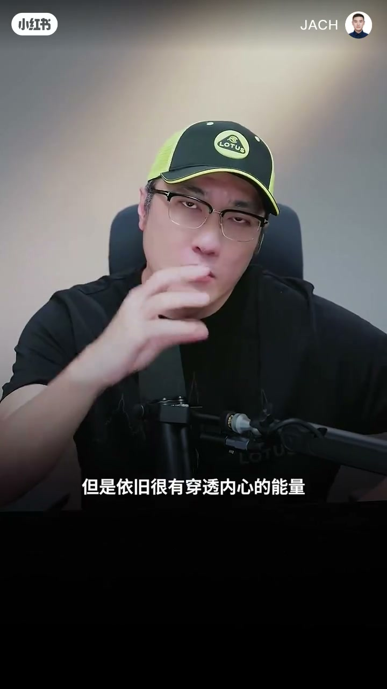
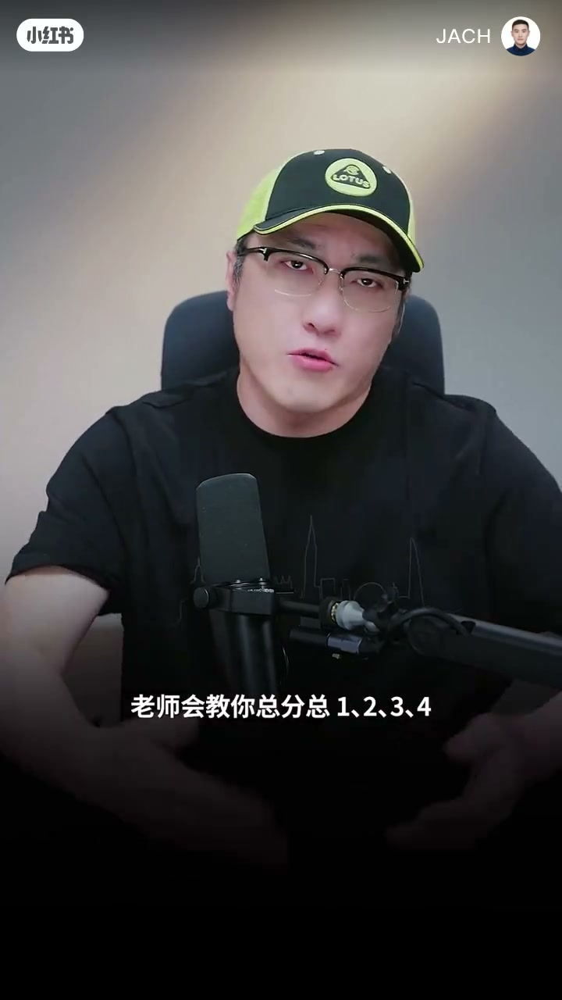

内容要点
王自如短片纠偏：表达能力强≠口才好。写东西好不好、说话有没有感染力，本质是思维方式与思想高度，不是口齿训练。他批评「总分总、一二三四」式演讲课只剩形式逻辑；真正改变来自多年写稿（ZEALER 时期）与《科技相对论》对 storytelling、文字节奏甚至句尾字数与声调的推敲。ASR 将 ZEALER 识为 ZILLER，叙述已校正。
知识结构
别问「口才怎么变好」；文字力与感染力来自思维与思想，不是口齿；慢说话亦可穿透。
演讲课教总分总一二三四，貌似有条理；无思维/逻辑训练则内容无内涵无关联，反而是失败表达。
ZEALER 十余年与创业前独立做内容：不断写稿把思维方式写通；脑子想通却落不了笔=表达垃圾。
《科技相对论》主创：讲故事感、文字节奏；句尾留白时 15 字还是 25 字、第几声收束都要推敲。
练口才不如练思维与写作：把能想通的事写进片子/文章；形式条理只是外壳，内涵与关联才是表达。
00:00-00:22表达不是口才问题，是思维与思想
开场直接纠偏：很多人问「我的口才怎么能变好」，其实重点放错了。一个人的文字能力——写东西好不好、说话有没有感染力——「其实是思维方式的问题和你的思想的问题，不是口齿的问题」。
证据句：有些人说话很慢，但依旧有穿透内心的能量，因为思想高度够。结论口令清晰——不要把重点放在口才本身的训练上，而是要训练思维。

00:22-00:45演讲课的「总分总」：只有形式逻辑
他见过很多上过所谓演讲课、口才课的人：老师会教总分总、一二三四，说起来貌似很有条理。但若只学会具体方法论，没有在思维能力与逻辑能力上训练好，讲出来的东西除了「一二三四听起来很有逻辑」以外，细听内容「毫无内涵、毫无关联性可言」——那反倒是失败的说话。
这一段把「表达训练」拆成两层：可被训练的形式外壳，与不可被套路替代的思维内核。

00:45-01:29写稿与 Storytelling：真正改变表达的路径
他自己的转折点：做 ZEALER（口播品牌名；ASR 曾误识为 ZILLER）十余年，以及创业前独立制作内容的时间——「不断的写稿子写内容」，把自己的思维方式有了很大提升。关键检验：脑子里能想通的事，落到笔头上若说不清，表达起来「简直就是垃圾，没法进片子，没法作文」。
《科技相对论》创作过程对他提升很大，他是主创之一。当时对故事表达叫 Storytelling：讲故事的感觉、文字的节奏感；甚至句子或关键段落结尾希望留白、带来想象空间时，「到底是用 15 个字还是 25 个字，最后一个词是应该用第几声结束」，都要仔细推敲。
完整转录（75段）
以下文本由 Whisper medium 模型自动转录，可能存在少量识别误差，已尽可能修正。
一个人的表达不是口才问题
就是很多人认为说
我的口才怎么能变好
那你就把重点放错了
一个人的文字能力
写东西好不好
说话有没有感染力
其实是思维方式的问题
和你的思想的问题
不是口齿的问题
有些人说话很慢
但是依旧很有穿透
内心的能量
那就是因为他的思想的高度
足够的高
所以大家不要把重点放在
口才本身的训练上
而是要训练思维
我有见过很多
上过那些所谓的演讲课
口才课
老师会教你总分总
一二三四说起来
貌似很有条理
但是那些学会了
具体的方法论
但是没有在思维能力
和逻辑能力上
有很好训练的人
讲出来的东西
除了有一二三四
听起来很有逻辑以外
你仔细听了把内容
里边是毫无内涵
毫无关联性可言的
那反倒是失败的
说话可能是一个
被训练的过程
我的表达能力
在什么时候
真正得到了很大的一个改变
是过去做ZEALER期间
十几年的时间
包括我自己在创业ZEALER之前
自己做内容
独立制作做内容的时间
不断的写稿子写内容
把自己的思维方式
有了很大的这种提升和改变
我觉得是那个时候
有的时候脑子里
能想通的事
落到笔头上来说
那你表达起来
简直就是垃圾
没法进片子
没法作文
然后科技相对论的创作过程
对我的提升很大
我也是主创之一
当时我们对于故事的表达
就我们叫Storytelling
就是这种讲故事的感觉
文字的节奏感
甚至如果最后这一个句子
结尾的时候
或者关键段落的
最后一个结尾的句子
希望给大家留白
带来想象空间的时候
到底是用15个字
还是25个字
最后一个词
是应该用第几声结束
我们都是要仔细推敲的